About
WatchDog - tool for GitHub to keep repositories
you are interested in and their pull requests in tray menu.
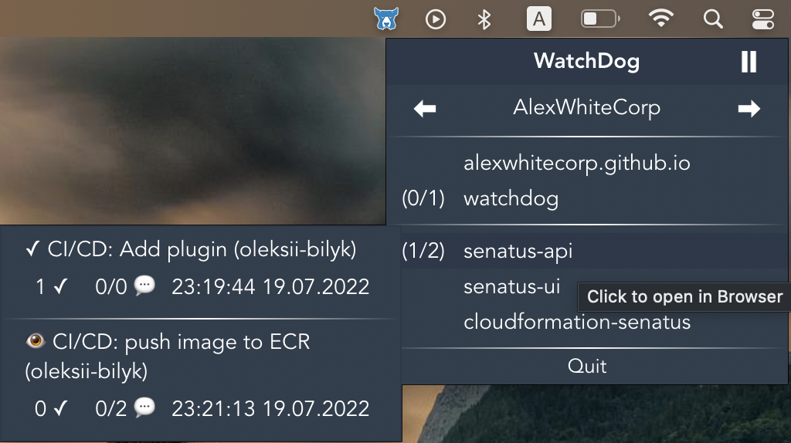
Thanks to this tool you will be able to:
- see all your PRs and PRs where your review is request in one place
- open needed repository or PR just in two clicks
WatchDog can be useful for you if:
- you are working in a big team
- you are working in several teams or organizations in same time
- project code consists of many repositories
- every day you receive a lot of PRs(some of them are long playing and it's hard to keep
attention)
- you would like to open favorite(or needed for work) repositories in two clicks
Functionality
After you launch app you see app icon in tray.
On icon click will be opened pop up window with main menu.
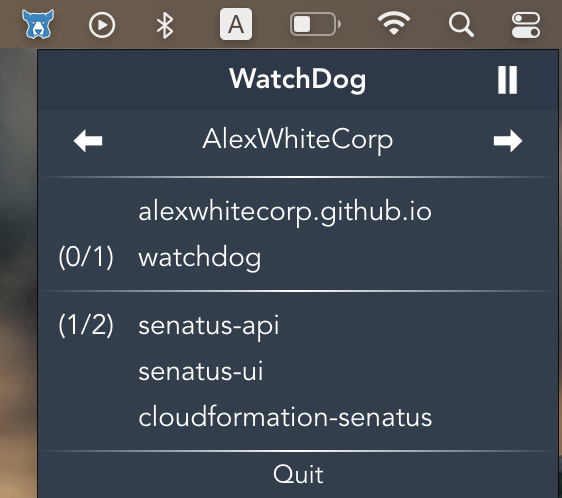
Main menu contains navigation panel between organizations(you will provide in config file)
and list of repositories(also configurable) in this organization you are interested in.
Repositories
By clicking on repository name your open it's GitHub page in Browser.
In case if there are opened Pull Requests in repository you see their number in this format:
(approved PRs/total opened PRs in repository) repository-name
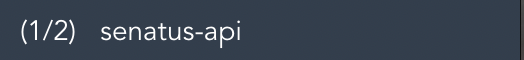
Notice: PR is approved = at least one approval review
Pull Requests
On mouse hover on repository name you see all opened PRs in this repository.
For each PR provides next info:
- PR title and author
- number of approval requests
- PR author's comments/PR reviewers comments
- Time of last update
By clicking on pull request card your open it's GitHub page in Browser.
If you have approved PR you will see '✓' near PR title
or '👁' if you leave at least one comment and haven't received answer yet(code review without approve)
Notice: you don't see next PRs in this list:
- drafts
- Bump Bot PRs
- you are not author or reviewer of pull request
Refreshing and Icon color
Data is re-fetched every 5 minutes using GitHub API to keep information up to date.
By default icon color is black.
But if there is at least one PR not approved(at least one approval review)
and you haven't reviewed it(or reviewed but already received answers from PR's author)
icon color will be changed to blue.
So if you take a look on icon and it's blue - it means at least one PR needs your attention.
After all PRs become approved(or closed) icon color will be settled back to black.
You can temporally pause/resume refreshing using button in the top right corner.
For example: on weekends to don't quit app at all.
New versions
On new version will be available you will receive notification
and special icon appear in the top left corner of main menu - click on it to open download page in browser
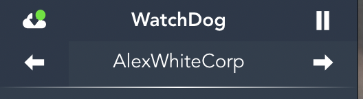
Download
Install
Configuration
Before installation you need to prepare config file.
In this file you will fill in information about repositories you are interested in
and provide tokens for access to them.
In your home directory create .watchdog dir with config.json file inside it.
So final path will looks like:
~/.watchdog/config.json
Fill in created config file using next schema(example):
More info about Access Token generation.
Install on MacOS
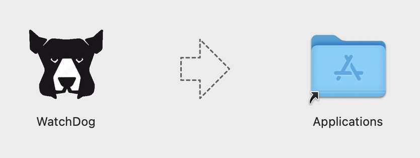
If you try to run WatchDog app you will receive error message that image is damaged.
It actually means that author haven't bought Apple Developer Id yet and haven't sign this app.
So application is moved to quarantine.
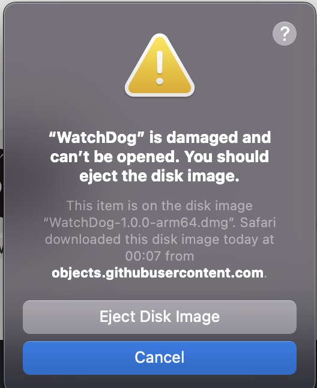
To solve this problem you just need to run next command in terminal:
xattr -d com.apple.quarantine /Applications/WatchDog.app
If you try to run app now from Applications tab it will successful opens
you will see new security alert "... app is from an unidentified developer..." :)
To solve this problem:
1. Open System Preferences
2. Go to Security & Privacy and select the General tab
3. If you’ve been blocked from opening an app within the past hour,
this page will give you the option to override this by clicking the
temporary button ‘Open Anyway’..
4. You’ll be asked one more time if you’re sure, but clicking Open will
run the app
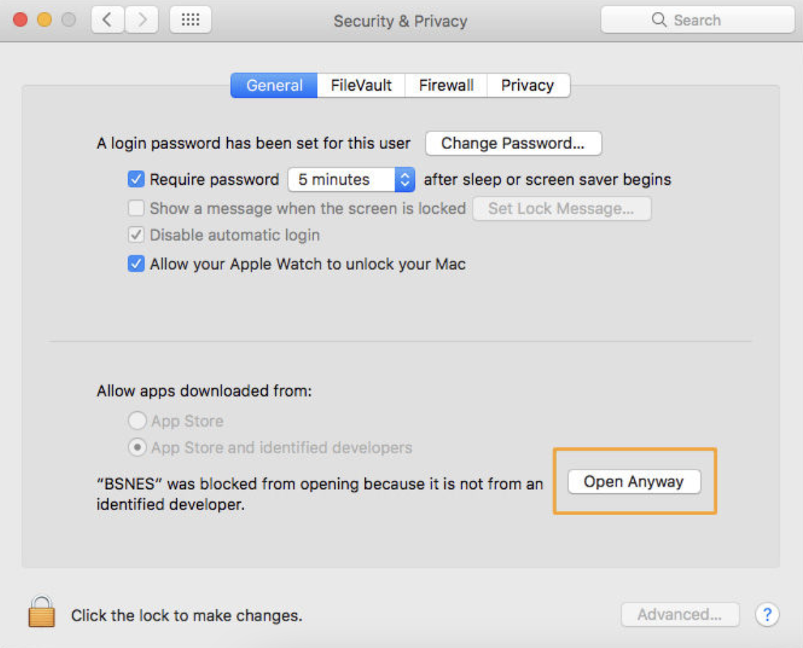
Happy end!
Or you can try to go to Custom build guide(npm and
Node.js are required).
If you generate app build on your machine you will avoid any security error message.
Install on Windows 10
After you have downloaded and launched installer
(Windows x64)
you will receive warning message:
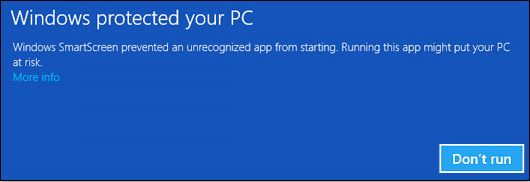
It actually means that author haven't bought certificate yet and haven't sign this app.
Click More info and your will see Run anyway button.
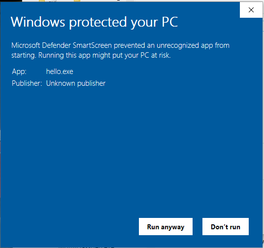
That's all :)
Install using Custom Build
You can try to generate custom build using project source code.
In this way you will avoid any security warning related to the lack of signature.
For this you need npm and Node.js installed.
Clone source code from project official repository:
git clone https://github.com/AlexWhiteCorp/watchdog.git
Move inside cloned directory and install needed dependencies
npm install
And finally generate you personal build:
npm run electron:build
Electron-builder will automatically detect your OS/arch type and create install launcher.
You can find it in dist_electron folder. Final name depends on you OS, arch and app version:
MacOS ARM: dist_electron/WatchDog-{version}-arm64.dmg
MacOS x64: dist_electron/WatchDog-{version}.dmg
Windows x64: dist_electron/WatchDog Setup {version}.exe
How to generate GitHub Access Token
Use this step-by-step
GitHub Official Instruction
to generate access token.
Token should has next access scopes for correct work:
- repo (all)
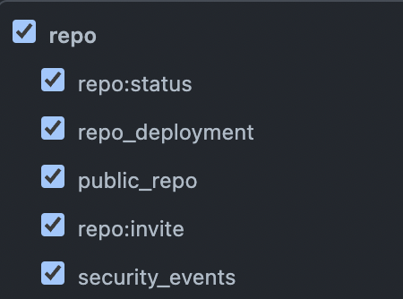
- admin:org (only read:org)
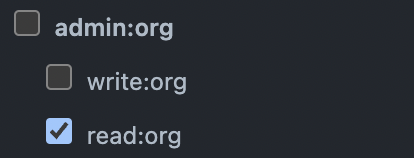
Don't forget to Authorize SSO (Single Sign-On) if it's enabled by your organization
(it's important!).
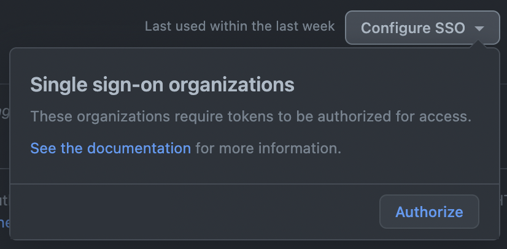
Usage Statistic